Unlocking Jupiter's Secrets
Juno will improve our understanding of the solar system's beginnings
by revealing the origin and evolution of Jupiter.
SOUTHWEST RESEARCH INSTITUTE (SWRI)
JUNO ROLE
Principal Investigator (PI), responsible for overall success of NASA mission and leader of the science team. Analysis and interpretation of microwave radiometry results as applied to Jupiter’s atmosphere and radiation belts. Data analysis of plasma, energetic particle, and radio and plasma wave observations. Oversees and participates in overall Education/Public Outreach (E/PO) program.
UNIVERSITY OF COLORADO, BOULDER
JUNO ROLE: SPACE PHYSICS.
Chairs magnetospheres working group, analyzes fields and particles data, auroral images; interdisciplinary role integrating in situ and remote sensing OBS.
DEPARTMENT OF SPACE SCIENCES, UNIVERSITY OF MICHIGAN
JUNO ROLE
Plans, designs, and sequences Jupiter water and ammonia observations with the Microwave Radiometer (MWR) System. Develops the required thermo-chemical-condensation models appropriate to the geometry of observations. Performs reduction and analysis of data to determine the distribution of water and ammonia on Jupiter. Combines the MWR results with infrared observations made by JIRAM on Juno to provide meteorological context for composition. Assists the science team on the interpretation of data with the goal of understanding the formation of Jupiter and the origin and evolution of its atmosphere.
Juno's principal goal is to understand the origin and evolution of Jupiter. Underneath its dense cloud cover, Jupiter safeguards secrets to the fundamental processes and conditions that governed our solar system during its formation. As our primary example of a giant planet, Jupiter can also provide critical knowledge for understanding the planetary systems being discovered around other stars.
With its suite of science instruments, Juno will investigate the existence of a solid planetary core, map Jupiter's intense magnetic field, measure the amount of water and ammonia in the deep atmosphere, and observe the planet's auroras.
Juno will let us take a giant step forward in our understanding of how giant planets form and the role these titans played in putting together the rest of the solar system.


NASA has approved an update to Juno’s science operations until July 2021. This provides for an additional 41 months in orbit around Jupiter and will enable Juno to achieve its primary science objectives. Juno is in 53-day orbits rather than 14-day orbits as initially planned because of a concern about valves on the spacecraft’s fuel system. This longer orbit means that it will take more time to collect the needed science data.
In Greek and Roman mythology, Jupiter drew a veil of clouds around himself to hide his mischief. It was Jupiter's wife, the goddess Juno, who was able to peer through the clouds and reveal Jupiter's true nature. The Juno spacecraft will also look beneath the clouds to see what the planet is up to, not seeking signs of misbehavior, but helping us to understand the planet's structure and history.
T. Pyle (SSC) Theories about solar system formation all begin with the collapse of a giant cloud of gas and dust, or nebula, most of which formed the infant sun. Like the sun, Jupiter is mostly hydrogen and helium, so it must have formed early, capturing most of the material left after our star came to be. How this happened, however, is unclear. Did a massive planetary core form first and gravitationally capture all that gas, or did an unstable region collapse inside the nebula, triggering the planet's formation? Differences between these scenarios are profound.
Even more importantly, the composition and role of icy planetesimals, or small proto-planets, in planetary formation hangs in the balance – and with them, the origin of Earth and other terrestrial planets. Icy planetesimals likely were the carriers of materials like water and carbon compounds that are the fundamental building blocks of life.
Unlike Earth, Jupiter's giant mass allowed it to hold onto its original composition, providing us with a way of tracing our solar system's history. Juno will measure the amount of water and ammonia in Jupiter's atmosphere and determine if the planet actually has a solid core, directly resolving the origin of this giant planet and thereby the solar system. By mapping Jupiter's gravitational and magnetic fields, Juno will reveal the planet's interior structure and measure the mass of the core.